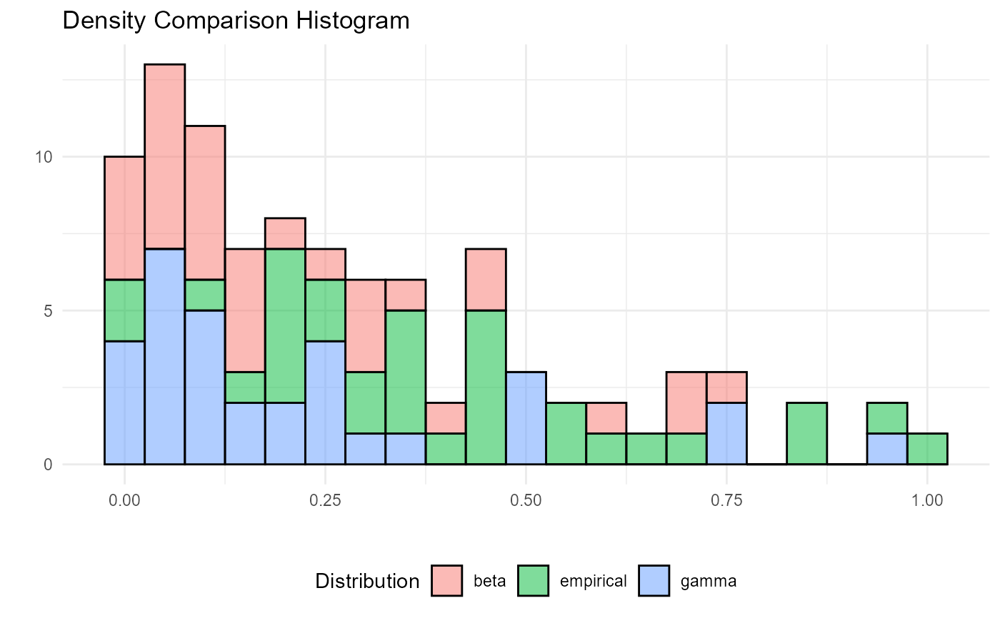

this will produce a ggplot2 or plotly histogram plot of the
density information provided from the hai_get_density_data_tbl function.
hai_density_hist_plot(
.data,
.dist_name_col = distribution,
.value_col = dist_data,
.alpha = 0.382,
.interactive = FALSE
)The data that is produced from using hai_get_density_data_tbl
The column that has the distribution name, should be distribution and that is set as the default.
The column that contains the x values that comes from the
hai_get_density_data_tbl function.
The alpha parameter for ggplot
This is a Boolean fo TRUE/FALSE and is defaulted to FALSE.
TRUE will produce a plotly plot.
A plot, either ggplot2 or plotly
This will produce a histogram of the density information that is
produced from the function hai_get_density_data_tbl. It will look for an attribute
from the .data param to ensure the function was used.
Other Distribution Plots:
hai_density_plot(),
hai_density_qq_plot()
library(dplyr)
df <- hai_scale_zero_one_vec(.x = mtcars$mpg) %>%
hai_distribution_comparison_tbl()
dist_data_tbl <- hai_get_dist_data_tbl(df)
hai_density_hist_plot(
.data = dist_data_tbl,
.dist_name_col = distribution,
.value_col = dist_data,
.alpha = 0.5,
.interactive = FALSE
)
